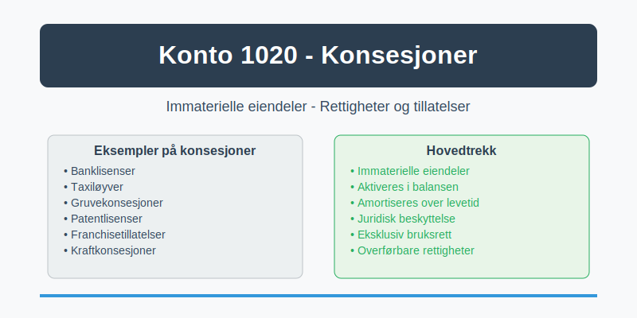
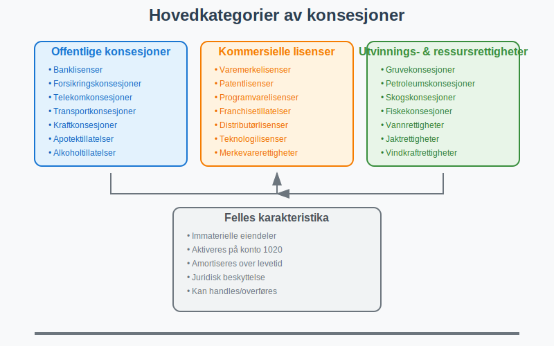
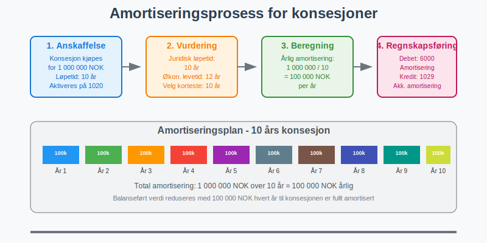

Konto 1020 - Konsesjoner er en viktig konto for virksomheter som har ervervede rettigheter, lisenser og konsesjoner som gir dem spesielle forrettigheter eller eksklusive bruksrettigheter. Denne kontoen brukes for å registrere immaterielle eiendeler i form av konsesjoner som kan aktiveres og amortiseres over tid i balansen.

Hva er konsesjoner?
Konsesjoner er offisielle tillatelser eller rettigheter som gir innehaveren en eksklusiv eller begrenset rett til å utøve bestemte aktiviteter. I regnskapsmessig sammenheng omfatter konsesjoner:
- Konsesjoner fra myndigheter: Tillatelser til å drive bestemte typer virksomhet
- Driftskonsesjoner: Rettigheter til å drive infrastruktur eller offentlige tjenester
- Utvinningsrettigheter: Rettigheter til å utvinne naturressurser
- Lisenser: Rettigheter til å bruke patenter, varemerker eller teknologi
- Franchisetillatelser: Rettigheter til å drive under en etablert merkevare
Typer konsesjoner som registreres på konto 1020
Offentlige konsesjoner
- Banklisenser: Tillatelse til å drive bankvirksomhet
- Forsikringskonsesjoner: Rettighet til å tilby forsikringstjenester
- Telekomkonsesjoner: Tillatelse til å drive telekommunikasjonsvirksomhet
- Transportkonsesjoner: Rettigheter til å drive kollektivtransport
- Kraftkonsesjoner: Tillatelse til produksjon og distribusjon av elektrisk kraft
Kommersielle lisenser og rettigheter
- Varemerkelisenser: Rettighet til å bruke registrerte varemerker
- Patentlisenser: Rettighet til å utnytte patentert teknologi (ikke eierskap av patenter)
- Programvarelisenser: Rettighet til å bruke og distribuere programvare
- Franchisetillatelser: Rettighet til å drive under etablerte konsepter
- Distributørlisenser: Eksklusive rettigheter til å distribuere produkter
Utvinnings- og ressursrettigheter
- Gruvekonsesjoner: Rettighet til å utvinne mineraler
- Petroleumskonsesjoner: Rettighet til å lete etter og utvinne olje og gass
- Skogskonsesjoner: Rettighet til å hogge i bestemte områder
- Fiskekonsesjoner: Rettighet til å drive fiske i bestemte farvann

Kriterier for aktivering på konto 1020
For at konsesjoner kan aktiveres på konto 1020, må de oppfylle følgende kriterier:
Grunnleggende aktiveringsvilkår
- Kontrollerbar ressurs: Virksomheten må ha kontroll over konsesjonen
- Fremtidige økonomiske fordeler: Konsesjonen må forventes å generere økonomiske fordeler
- Pålitelig måling: Anskaffelseskost må kunne måles pålitelig
- Separat identifiserbar: Konsesjonen må kunne identifiseres separat fra goodwill
Spesifikke krav for konsesjoner
- Juridisk eksistens: Konsesjonen må ha juridisk grunnlag
- Overførbarhet: Konsesjonen bør kunne overføres eller selges
- Varig verdi: Konsesjonen må ha verdi utover ett regnskapsår
- Dokumentert eierskap: Klare bevis på eierskap eller bruksrett
Verdsettelse og anskaffelseskost
Kjøpte konsesjoner
Anskaffelseskost for kjøpte konsesjoner inkluderer:
- Kjøpesum til selger
- Juridiske honorarer og advokatkostnader
- Registreringsgebyrer og offentlige avgifter
- Konsulenthonorar for verdivurdering
- Transaksjonsrelaterte kostnader
Tildelte konsesjoner
For konsesjoner tildelt av myndigheter:
- Gebyr til myndigheter: Beløp betalt for konsesjonsprosessen
- Søknadskostnader: Kostnader for utarbeidelse av søknader
- Juridisk bistand: Advokathjelp i konsesjonsprosessen
- Teknisk dokumentasjon: Kostnader for tekniske utredninger
| Konsesjontype | Typisk anskaffelseskost | Vanlige tilleggskostnader |
|---|---|---|
| Banklisens | Søknadsgebyr + juridisk bistand | Teknisk IT-vurdering |
| Gruvekonsesjoner | Auksjonssum + geologisk kartlegging | Miljøvurderinger |
| Franchisetillatelser | Franchiseavgift + opplæring | Markedsføringsbidrag |
| Programvarelisenser | Lisenspris + implementering | Opplæring og support |
Amortisering av konsesjoner
Konsesjoner skal amortiseres over deres økonomiske levetid eller juridiske løpetid, avhengig av hvilken som er kortest.
Amortiseringsperioder
- Tidsbegrenset konsesjon: Amortiseres over konsesjonens løpetid
- Tidsubegrenset konsesjon: Amortiseres over forventet økonomisk levetid
- Fornybar konsesjon: Vurderes individuelt basert på fornybarhet
Typiske amortiseringsperioder
| Konsesjontype | Juridisk løpetid | Økonomisk levetid | Amortiseringsperiode |
|---|---|---|---|
| Taxiløyve | 10 år | 15 år | 10 år |
| Patentlisens | 20 år | 10 år | 10 år |
| Franchisetillatelse | 5 år | 8 år | 5 år |
| Gruvekonsesjoner | 25 år | 20 år | 20 år |

Regnskapsføring av konsesjoner
Anskaffelse av konsesjon
Debet: Konto 1020 - Konsesjoner
Kredit: Konto 1900 - Bank (eller 2000 - Leverandører)
Amortisering av konsesjoner
Debet: Konto 6000 - Amortisering immaterielle eiendeler
Kredit: Konto 1029 - Akkumulert amortisering konsesjoner
Salg av konsesjon
Debet: Konto 1900 - Bank
Kredit: Konto 1020 - Konsesjoner
Kredit: Konto 8000 - Gevinst ved salg av anleggsmidler
Nedskrivning og verditest
Konsesjoner må vurderes for nedskrivning når det foreligger indikasjoner på verdifall:
Indikatorer på verdifall
- Regulatoriske endringer: Nye regler som reduserer konsesjonens verdi
- Teknologiske endringer: Ny teknologi som gjør konsesjonen mindre verdifull
- Markedsendringer: Endret etterspørsel etter tjenester under konsesjonen
- Konkurranse: Økt konkurranse som reduserer lønnsomhet
- Politiske endringer: Endret politikk som påvirker konsesjonens verdi
Nedskrivningstest
- Identifisere indikatorer: Vurder om det foreligger indikatorer på verdifall
- Beregne gjenvinnbart beløp: Høyeste av bruksverdi og virkelig verdi
- Sammenligne med balanseført verdi: Nedskrivning hvis balanseført verdi er høyere
- Regnskapsføre nedskrivning: Reduser balanseført verdi til gjenvinnbart beløp
Skattemessig behandling
Skattemessig amortisering
- Saldogruppe: Konsesjoner inngår vanligvis i saldogruppe d (20% avskrivning)
- Avskrivningsmetode: Degressiv avskrivning etter skatteloven
- Maksimal avskrivning: 20% av gjenstående saldo årlig
Forskjeller mellom regnskap og skatt
| Aspekt | Regnskapsmessig | Skattemessig |
|---|---|---|
| Avskrivningsmetode | Lineær amortisering | Degressiv avskrivning |
| Avskrivningssats | Basert på levetid | Maksimalt 20% |
| Nedskrivning | Når verdifall foreligger | Ikke tillatt |
Viktig: Forskjeller mellom regnskapsmessig og skattemessig behandling kan medføre utsatt skatt.
Eksempel på bruk av konto 1020
Eksempel: NorTech AS kjøper en eksklusiv distributørlisens for nordiske land for 5 000 000 NOK. Lisensen har en juridisk løpetid på 10 år og kan fornyes.
Regnskapsføring ved anskaffelse:
Debet: Konto 1020 - Konsesjoner 5 000 000 NOK
Kredit: Konto 1900 - Bank 5 000 000 NOK
Årlig amortisering:
- Amortiseringsperiode: 10 år
- Årlig amortisering: 500 000 NOK
- Regnskapsføring:
Debet: Konto 6000 - Amortisering 500 000 NOK
Kredit: Konto 1029 - Akk. amort. 500 000 NOK
Balanseført verdi etter 3 år:
- Opprinnelig kostpris: 5 000 000 NOK
- Akkumulert amortisering: 1 500 000 NOK
- Balanseført verdi: 3 500 000 NOK
Forskjell fra andre immaterielle eiendeler
| Konto | Beskrivelse | Hovedkarakteristikk |
|---|---|---|
| 1000 | Forskning og utvikling | Selv-utviklede eiendeler |
| 1001 | Goodwill | Kjøpt ved virksomhetsoppkjøp |
| 1020 | Konsesjoner | Ervervede rettigheter og tillatelser |
| 1003 | Programvare | Kjøpte programvareløsninger |
| 1004 | Kundemasse | Kunderelasjoner og -lister |
Internasjonale regnskapsstandarder
IFRS-behandling
Under IFRS (IAS 38) behandles konsesjoner som immaterielle eiendeler med følgende særtrekk:
- Årlig verditest: For konsesjoner med ubegrenset levetid
- Omvurderingsmodell: Kan velges som alternativ til kostmodell
- Komponenttilnærming: Komplekse konsesjoner kan deles i komponenter
US GAAP
Under US GAAP (ASC 350) er behandlingen liknende, men med noen forskjeller:
- Ikke-amortisering: Konsesjoner med ubegrenset levetid amortiseres ikke
- Årlig verditest: Obligatorisk for ikke-amortiserte konsesjoner
- Ingen omvurdering: Kostmodell er eneste tillatte verdsettelsesmodell
Rapportering i årsregnskapet
Balansepresentasjon
Konsesjoner presenteres som anleggsmidler under immaterielle eiendeler:
ANLEGGSMIDLER
Immaterielle eiendeler
Konsesjoner XXX
Akkumulert amortisering (XXX)
Balanseført verdi XXX
Noteopplysninger
I notene må det opplyses om:
- Kostpris ved årets begynnelse
- Tilgang i løpet av året
- Amortisering i løpet av året
- Balanseført verdi ved årets slutt
- Amortiseringsmetode og -periode
- Vesentlige konsesjoner og deres løpetid
Praktiske tips for virksomheter
Konsesjonsstyring
- Opprett konsesjonsoversikt: Følg med på løpetider og fornyelsesfrister
- Planlegg fornyelser: Start fornyelsesprosessen i god tid
- Dokumenter verdiskapning: Spor hvordan konsesjoner bidrar til resultat
Verdivurdering
- Regelmessig verditest: Vurder konsesjonenes verdi årlig
- Markedsovervåkning: Følg med på markedsendringer som påvirker verdi
- Ekspertbistand: Bruk eksterne eksperter for komplekse verdivurderinger
Juridisk compliance
- Oppfyll konsesjonskrav: Sikre at alle vilkår overholdes
- Overvåk regelendringer: Følg med på nye regulatoriske krav
- Juridisk rådgivning: Bruk advokater for komplekse konsesjoner
Utfordringer og risikofaktorer
Regulatorisk risiko
- Endrede regler: Nye reguleringer kan påvirke konsesjonens verdi
- Politisk risiko: Politiske endringer kan true konsesjoner
- Miljøkrav: Strengere miljøkrav kan påvirke utvinningskonsesjoner
Markedsrisiko
- Teknologiske endringer: Ny teknologi kan gjøre konsesjoner obsolete
- Konkurranseendringer: Økt konkurranse kan redusere lønnsomhet
- Etterspørselsendringer: Endret etterspørsel påvirker konsesjonens verdi
Finansiell risiko
- Høye anskaffelseskostnader: Store investeringer i konsesjoner
- Usikker avkastning: Fremtidige økonomiske fordeler er usikre
- Nedskrivningsrisiko: Risiko for at konsesjoner mister verdi
Relaterte artikler
- Hva er Imaterielle Eiendeler?
- Konto 1000 - Forskning og utvikling
- Konto 1030 - Patenter
- Konto 1040 - Lisenser
- Konto 1050 - Varemerker
- Konto 1060 - Andre rettigheter
- Hva er Aktivering i Regnskap?
- Hva er Amortisering?
- Hva er Anleggsmidler?
- Hva er Goodwill?
- Hva er Balanse?
- Hva er Anskaffelseskost?
- Hva er Nedskrivning?